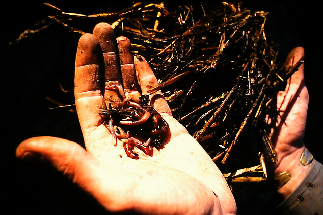
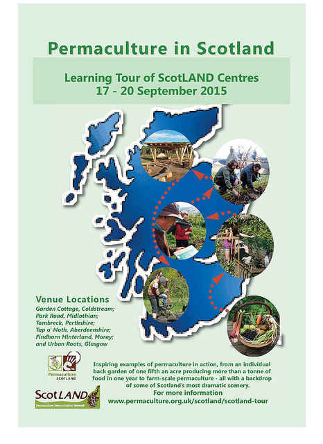

The Answer Lies in the Soil
Newcomers to the discipline of permaculture can feel overwhelmed by the complexity of knowledge, understanding, techniques, tools, and practical application with which they are presented. The idea that we can consciously design for all human needs whilst caring for the planet and all its living inhabitants in a fair way can seem like an overwhelming challenge. Learning has to be incremental.
We break down a holistic worldview into separate compartments to grasp this complexity and then learn to pull it all together in a web of beneficial relationships. After thirty years immersion in this process I am still learning every day.
The excitement of the fascinating insights we gain from this pool of knowledge is such that people are inspired to climb the steep mountain of learning but often find the next challenge is how to prioritise the doing and nondoing which will take you on this pathway of a lifetime, for permaculture is always a journey, never a destination.
Soil and Life – neglect it at our peril
For me soil is right up the top there, a micron or two behind air and water. But whilst without these two gifts we cannot survive today, soil is the basis of long term survival. In fact it is demonstrably the true foundation of civilisation. That is fertile, accessible, living soil.
We neglect it at our peril. Within historical memory (i.e. written records) Syria was a forest kingdom1, Iraq the birthplace of agriculture2 and Libya the breadbasket of the Roman Empire.3
I expect anyone reading this will be familiar with the essential components of soil:
● Mineral fraction (sand, silt, clay)
● Humus
● Air and water
● Adequate soil structure to admit and retain these
But the most important constituent, the one that resists erosion and minimises workload the most, the one which makes nutrition most available to plants and animals alike, is the life in the soil itself.
Does your Tree have Roots?
For many years now we have started Permaculture Design Courses with a lighthearted ‘entrance exam’, part of which is to ask people to draw a tree not as a contest in drawing skills or species accuracy, but looking for one thing only. Does their tree have roots? Once folks get this they become much more aware of the earth beneath our feet. The fact that so much of what we depend on is not (in ordinary circumstances) visible to us.
The life in the soil may be millions of individual organisms in a single handful. Animal and plant life in a constant process of exchange. Plant and tree roots provide the most astonishing marketplace, where bacteria, other roots, nematodes, earthworms etc. mingle in the jelly like rhizosphere doing what they do best. Green leaved plants ensure energy supply by producing sugars through photosynthesis which they may swap for nitrogen (the building blocks of life) from air in the soil harvested by (for example) leguminous plants.
We all know legumes produce nitrogen don’t we? No? Of course they don’t! It is bacteria staying in the little root nodule hotels they produce who do that job. And hugely significant are the largest living organisms yet found on planet earth. Blue whales?! No, fungi.
Not mushrooms, which are only their fruiting bodies, but mycelium, vast underground networks of whitish thread like material (largest yet discovered: thirty-five hectares which would be a lot of blue whales).4
Healthy Soil Brings Abundance
I shall be talking at the IPC about our experience and recorded research at Garden Cottage in the Scottish Borders.5 One tenth of a hectare garden which can produce one metric tonne of food in a year, all our firewood and five thousand plants and five hundred trees a year for sale in our nursery.
With a thousand visitors a year we are often asked two things: where is your worm farm and what companion planting do you use. Hmm. ‘Companion’ from the French meaning those you eat bread with. Answer: all our trees and plants are companions. Worm farm? You’re standing in it. We estimate a worm population of two tonnes (based on the work of Charles Darwin6 but that’s another story), which is the same weight as at least twenty big men. Worms are a bit slower in winter, but they don’t take tea breaks, weekends off, fail to get out of bed, or insist on six hour days. And they’re free. Best WWOOFers we ever had.
If they’re the best in our work force, the energy management bosses are surely the trees. If you only do one thing to realise your permaculture dream, plant some more.
From the Troodos Mountains, where I have again succeeded in bringing rain, best wishes and see you in London.
Graham Bell will present in the Soil Session at the International Permaculture Conference in London, 8-9 September.